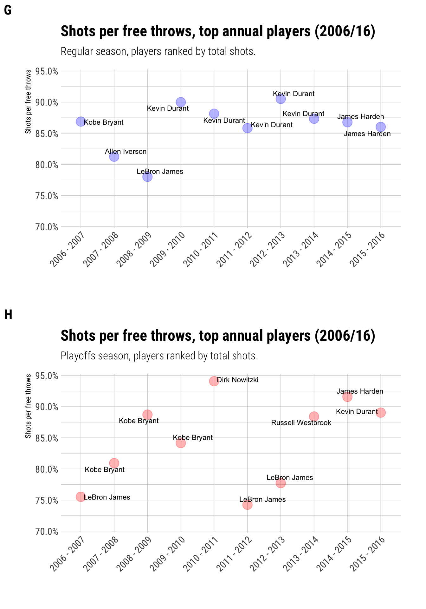

1 Summary
To see the all the code used in this post, visit my GitHub repository for this site
- Objectives: Visually understand who were the best NBA players between 2006 and 2016 and why.
- Challenge: Using the list-column workflow and the
Purrrpackage. - Data points: 6,798,209
- Language: R
2 Question
I know very little about sports, I know so little that when I came across this dataset about “free throws” in basketball, I pretty much had to look up what every column meant, except Players. After seeing that all the other columns to some extent say something about Players, I decided to explore who were the “best” players, and why?
3 Dataset description
The dataset is available on Kaggle. It contains 618,019 rows and 11 rows. Each row corresponds to a free throw attempt and there is a column called shot_made, which indicates whether or not the shot was made.
3.1 Who made the most shots between 2006 and 2016?
Plot A shows that between 2006 and 2016, Lebron James made the most shots in both the regular season and playoffs. In this figure there is not much difference between the second best player, Kevin Durant. Plot B shows a different story when during the playoffs, Lebron James scored twice as many shots as Kevin Durant. It’s also interesting to note that the top 10 players during the regular season (plot A) are different to those in the playoffs (plot B).
3.2 Who had the highest shots per free throw attempt between 2006 and 2016?
Shots per free throw attempt is a good indicator of how accurate players are at free throwing. It can also indicate something about the players’ strategy. For example, figure C and D shows that player accuracy is similar during the regular season and playoffs. We also see that Dirk Nowitzki had the highest accuracy. Contrast this with Lebron James whom despite scoring the most shots, doesn’t have as much free throw accuracy. This shows that during the 2006-2016 period, Lebron James had many more free throw attempts that Dirk Nowitzki, had the latter had more attempts, perhaps we would have had scored more shots than the former.
3.3 Who made the most shots each season?
Plots A through D summarised free throw stats for all ten seasons included in this analysis. Plots E through G will describe free throw stats per season. We begin with Plot E and F. These show a rivalry for the most free throws for each season between Kobe Bryant and Lebron James from 2006 to 2009. That year, an additional competitor is introduced, Kevin Durant. These three players dispute the title of the top scoring player for each season alternating the leading role. In 2014, James Harden makes a strong appearance by leading both the regular season and the playoffs in terms of total shots.

3.4 What was the free throw attempt between 2006 and 2016 for the player that scored the most each season?
Plots G and H provide more insight into each player’s strategy. In order to score the most shots each season, free throw accuracy must be around 80 to 90%. That’s most of where the variation is. There are two players that slightly step outside this pattern: during the 2010-2011 season, Dirk Nowitzki had almost 95% accuracy! Contrast this with Lebron James’ during the playoffs where he has below 80% accuracy. This indeed shows that he probably has a volume-centric strategy where he simply tries more and fails about once every four tries. Not bad!

4 Results
- Over the 2006-2016 period, Lebron James scored the most free throws in both the regular season (4,697) and playoffs (1,260).
- During the 2006-2016 period, amongst the top 10 players in terms of most scored free throws, Dirk Nowitzki had the highest accuracy in both regular season (0.8935) and the playoffs (0.9057).
- Kevin Durant made the most shots during four (or five if you count the 2011-2012 season) regular seasons. Quite a feat!
- During the playoffs, Kobe Bryant was three times the top player in terms of free throw shots per season. Not bad also!
- Lebron James attempts free throws more often than other top players but is consistent by scoring about three out of four attempts.
- Kobe Bryant’s accuracy is much more variable than Lebron’s, plot H shows the constrast between Lebron’s consistency and Kobe’s variability season to season.
- Between the 2006-2016 period there was much competition between Kobe and Lebron. The latter, however, manages to score almost double than the former during the playoffs.
5 Conclusion
In this post I analysed 6,798,209 data points on NBA free throws from 2006 to 2018. I focused on the Players variable to rank NBA players by the total number of shots for all ten seasons and amongst seasons. There is much scoring variability amongst top ten players with some playing less but being scoring more and others attempting much more but being consistent. The better strategy, judging by the ranking, is to attempt more and stay consistent.